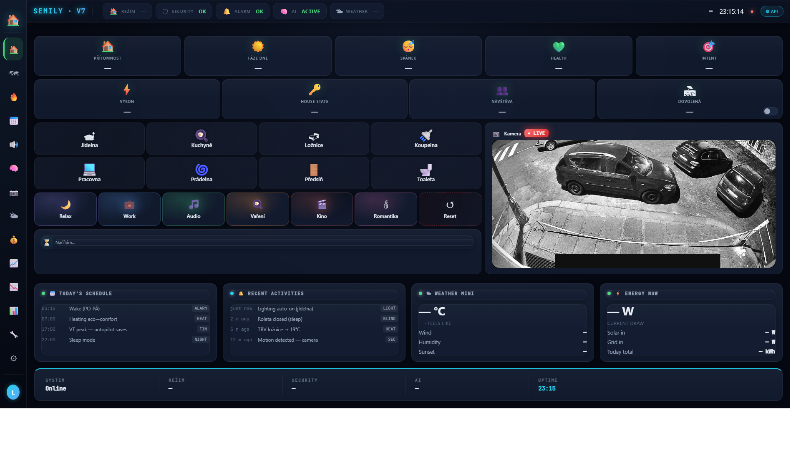

Domácí projekt · Homey Pro 2026
Domov, který mi
usnadňuje den
Světla se přizpůsobí tomu, kde jsem. Ráno mě čeká káva, při odchodu se omezí vytápění a v noci mě světlo neoslní. Takto si postupně stavím vlastní chytrý byt na systému Homey Pro 2026.
Moje chytrá domácnost podrobně
8:36 · Český komentář a titulky.
▶ Otevřít videoprohlídkuZavřít přehrávač
Archivní ukázka rozhraní · Dashboard V7
Jak domácnost ovládám
Snímky ukazují podobu rozhraní. Podrobnosti najdeš na stránkách dashboardu, diagnostiky a kamer.


Technický přehled · stav ověřený 1. 9. 2026
Historický snímek systému
Poslední ověřený stav · 1. 9. 2026
Archivní přehled z exportu rozhraní Homey API a kontroly nástroje Brain Guardian. Nejde o aktuální měření.
Skóre stavu systému
100/100
Automatizační postupy (flows)
248
Řídicí skripty (HomeyScript)
145
Připojená zařízení při měření
84/84
Stavové proměnné (sh_*)
782
Poslední zaznamenaná odchylka
Bug E ghost
Historický stav ověřený 1. 9. 2026: zařízení a automatizace z tehdejšího exportu Homey API; skripty a proměnné ze zálohy 15. 8. 2026; skóre stavu z auditu 30. 8. 2026.